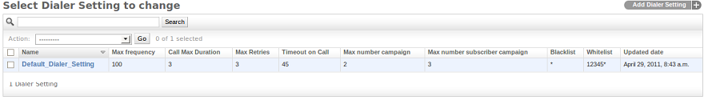
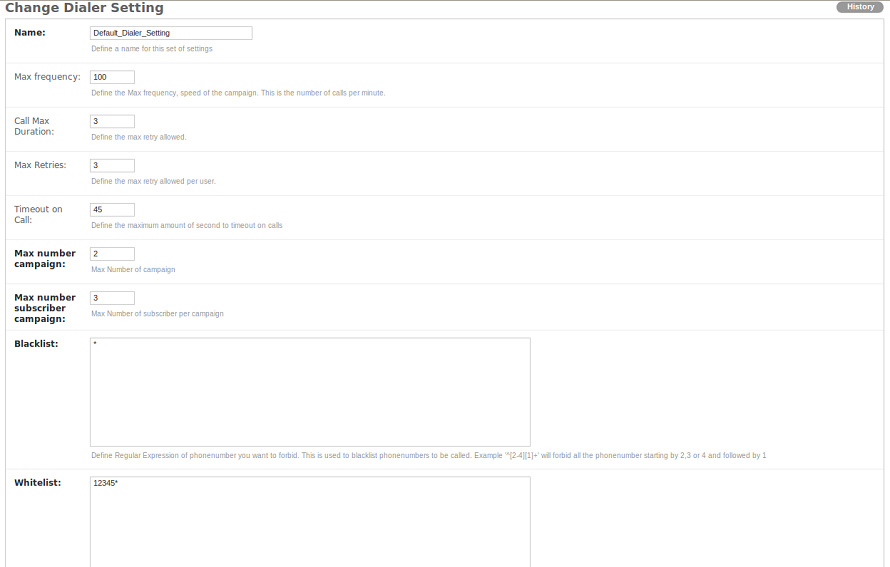

Admin Panel¶
Admin URL : http://HOSTNAME_IP/admin/
This interface provides user (ACL) management, full control of all Campaigns, Phonebooks, Subscribers, Gateways and configuration of the Audio Application.
The customer panel should be used for creating surveys, adding phonebooks, contacts and campaigns. The administrator panel is used for adminstrator inspection.
Admin User Management¶
The Admin section allows you to create administrators who have access the admin screens. Levels of access can be set. If the administrator is to be allowed to make calls, then a gateway and dialer- settings must be set for that administrator.
Customers¶
In DialerAI, users or customers are known as Managers. Customers only have access to the customer panel. Before a customer can make calls, they must have both dialer-settings and a gateway attached to their account.
Sites¶
Some of the features of DialerAI are dependent on the hostname or IP address, so this has to be set correctly in site address.
In the Admin dashboard, locate the “Sites” link and click change. By default, there will be an entry of “example.com”. Edit this setting to reflect the hostname of the server, or if you do not have this set up, the IP address. e.g. http://www.domain.tld or in the case of an IP address, http://192.168.1.200
- http://<SERVER-IP>/admin/sites/
Phonebook¶
The phonebook list will be displayed from the following URL. You can add a new
phonebook by clicking Add phonebook and adding the name of the phonebook and its
description, Also from the phonebook list, click on the phonebook that you want
to update.
URL:
To Add/Update phonebook for a user
URL:
Contact¶
The contact list will be displayed from the following URL and you can add a new contact
by clicking Add contact & adding the contact details (i.e. phone number, name,
description about contact, contact status) to one phonebook from the phonebook list.
If the contact is active and the linked phonebook is also attached to a running campaign, then the contact will be added into subscriber.
From the contact list, click on the contact that you want to update.
URL:
To Add/Update a contact
URL:
To import bulk contacts into a phonebook, click on Import contacts.
where you can upload the contacts via a CSV file in to one phonebook.
URL:
Campaign¶
The campaign list will be displayed from the following URL. You can add a new campaign
by clicking Add campaign. While adding a campaign, it is important to add campaign’s
start and end dates with time & week-day exceptions. Also select the gateway
through which calls will be routed & the phonebook(s) linked with contacts.
From the campaign list, click on the campaign that you want to update.
URL:
To Add/Update Campaign for user
URL:
Subscriber¶
The Subscriber list will be displayed from the following URL. You can add
a new subscriber by clicking Add Subscriber. Also from the campaign
subscriber list, click on the subscriber to update.
While creating a contact, if its linked phonebook is also attached to a running campaign, then the contact will be added into the subscriber.
URL:
To Add/Update Subscriber
URL:
Dialer Settings¶
The dialer settings list will be displayed from the following URL. The Dialer settings
list is applied to a system User. You can add a new setting by clicking Add Dialer Settings
and add numeric values for the limit. Also from the dialer settings list, click on
the setting to update.
URL:

To Add/Update dialer settings for a DialerAI user
URL:

To apply dialer settings limit to a User, click on Customers or Admins,
select the user to be updated & apply settings from the dialer settings list.
URL:
Dialer Gateway¶
The Dialer Gateway list will be displayed from the following URL. You can add a new gateway
by clicking Add Dialer Gateway and adding the details (e.g. gateway name, hostname,
protocol etc.). Also from the gateway list, click on the gateway that you want to update.
URL:
To Add/Update a dialer gateway
URL:
Survey¶
The survey application for DialerAI allows polls and surveys to be taken over the phone.
Each contact is called, and then played a sound file. After the sound file is heard, the user can enter their answer through the phone keypad using keys 0 to 9.
Therefore before creating the survey, the first job is to upload the audio for the survey. One audio file is required for each question.
Add Audio File
CLick Audio Files, then click Add.
Give the audio file a descriptive name, chose the file to upload.
In the Admin screens, there are options to convert to other formats, change the number of channels, e.g. change from stereo to mono, and down-sample the frequency. Finally, the user can be assigned.
Survey Admin Functions
From the admin screen, Surveys can be added, deleted and edited. Additionally, survey questions can be re-ordered.
URL:
To Add/Update a survey
URL:
To Add/Update a survey question
When the survey is complete, the results can be inspected.
Call Request¶
The call request list will be displayed from the following URL. You can add a
new call request by clicking Add Call Request. Also from the call request list,
click on the request to update.
URL:

To Add/Update a Call Request
URL:
Call contacts/subscribers¶
A call-request will spool a call directly from the platform using a dialer gateway and update the call-request status after receiving a response from the gateway.
In order to quickly relaunch a call when testing, the subsciber can be set from to pending. This will cause the call to be made again.
VoIP Call Report¶
A VoIP Call list will be displayed from following URL. You can not add new call reports.
URL: